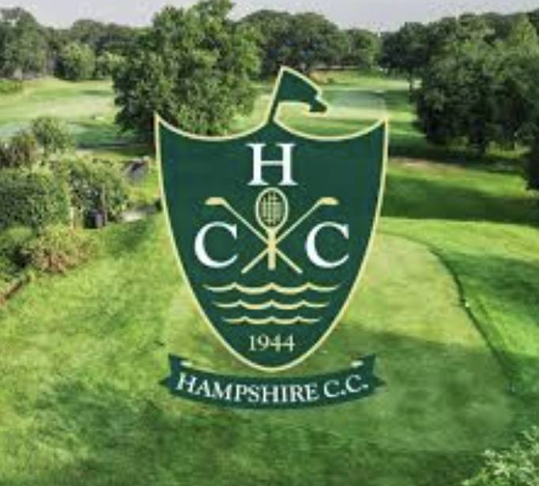

About Us
Growing the game by opening the door for students who otherwise wouldn't have the chance to play.
A Program Built on Access
Finding FairWays is a student-led golf mentorship program that provides underprivileged middle school students with direct access to the sport. Through our relationship with a local golf course, we offer equipment, instruction, and regular course access at no cost.
High school students lead sessions focused on basic skills, a supportive environment, and making the game enjoyable for new players. Our mission is to grow the game by opening the door for students who otherwise would not have the chance to play.


Founded by Will Cohen ('27) in Fall 2024
Finding FairWays uses golf as a tool for confidence, belonging, and connection — not just a clinic on swing mechanics. High school varsity golfers mentor younger students, providing basic instruction, equipment support, and supervised course access.
That makes a sport that can feel exclusive feel more approachable, and gives middle schoolers a straightforward, reliable way to experience the game.
Hampshire Country Club
Our outdoor home base gives students access to a real driving range and a putting green, with support from the club's golf professionals, shorter clubs sized for younger players, and balls provided at no cost.
Sessions run in small rotating groups given limited range space, so every student gets real attention at our partner, Hampshire Country Club.

"My goal was to establish a reliable way for middle school students to experience the game and to help grow a sport I've always valued."
Will Cohen, Founder